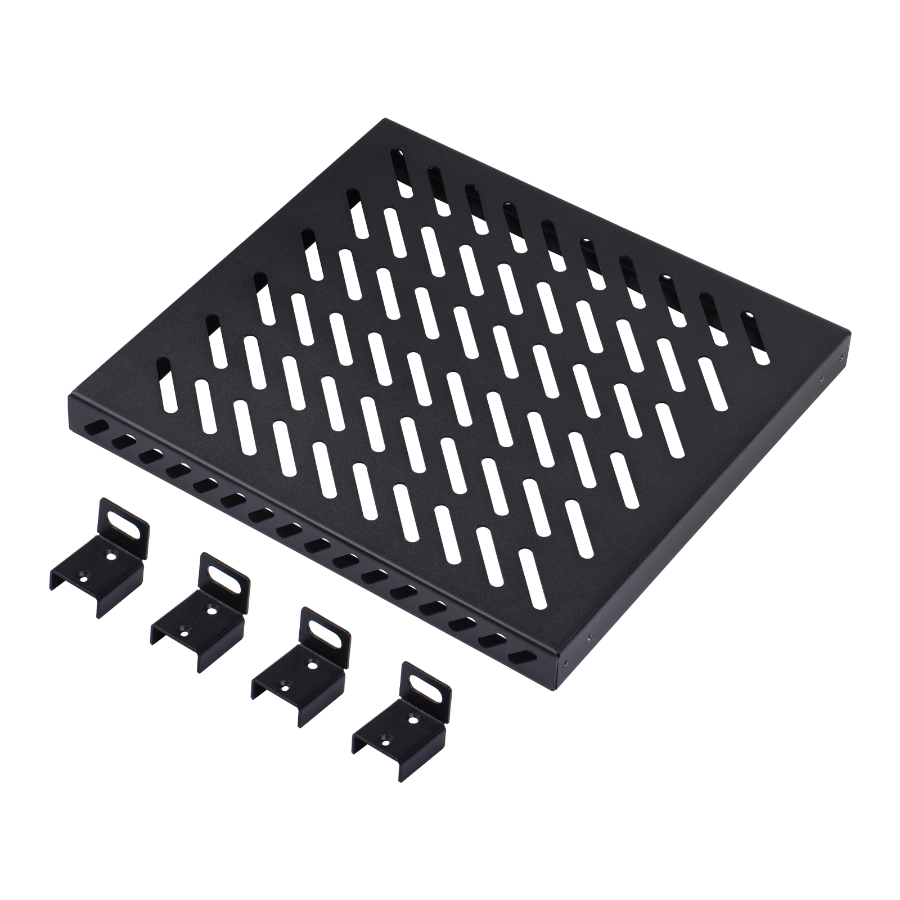
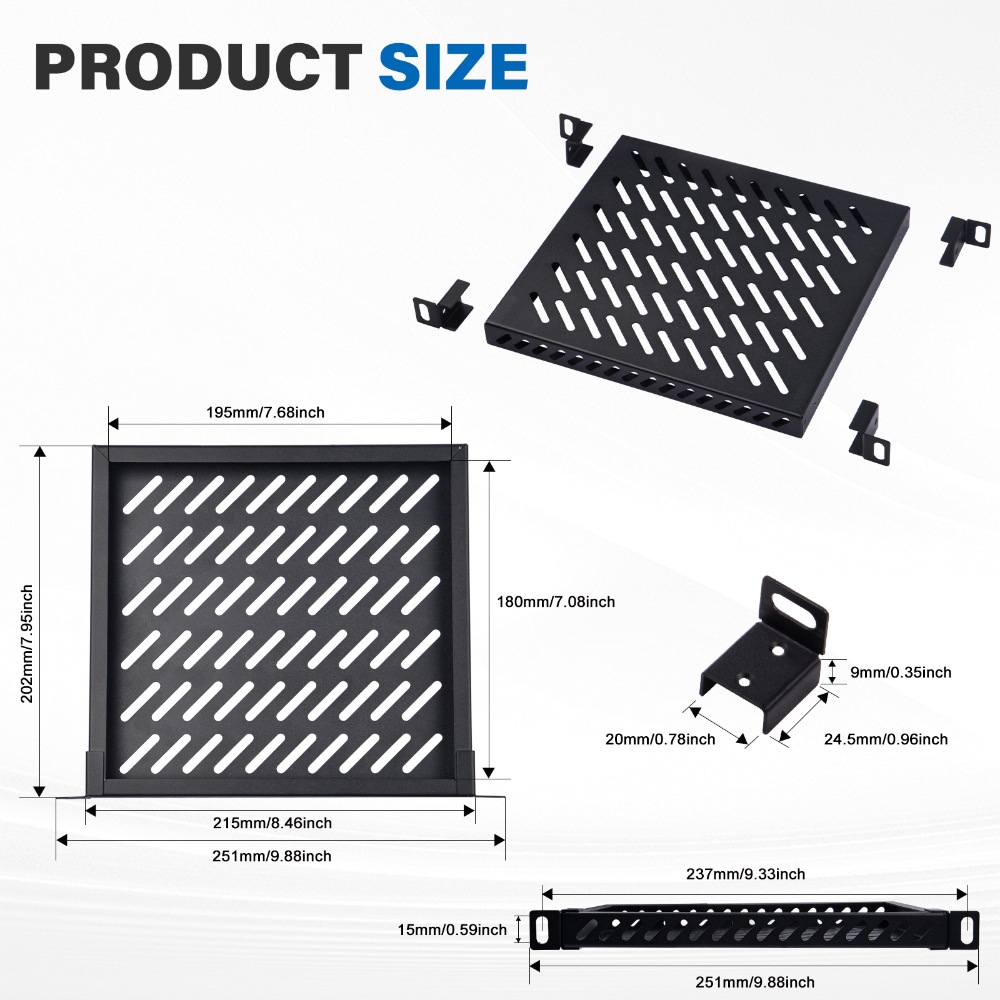
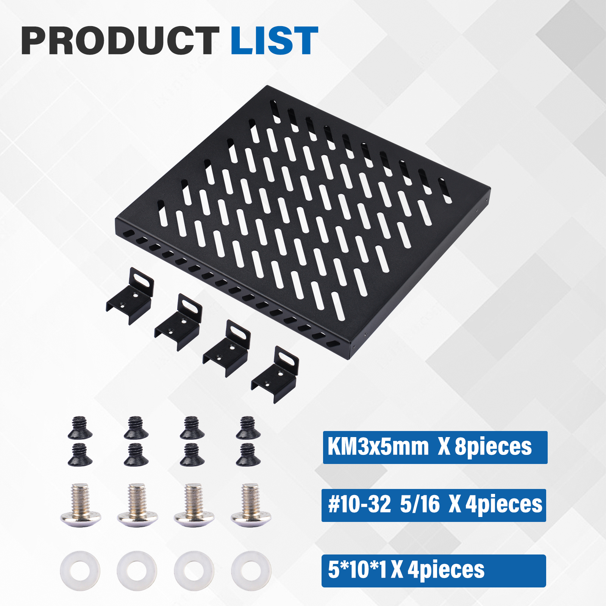
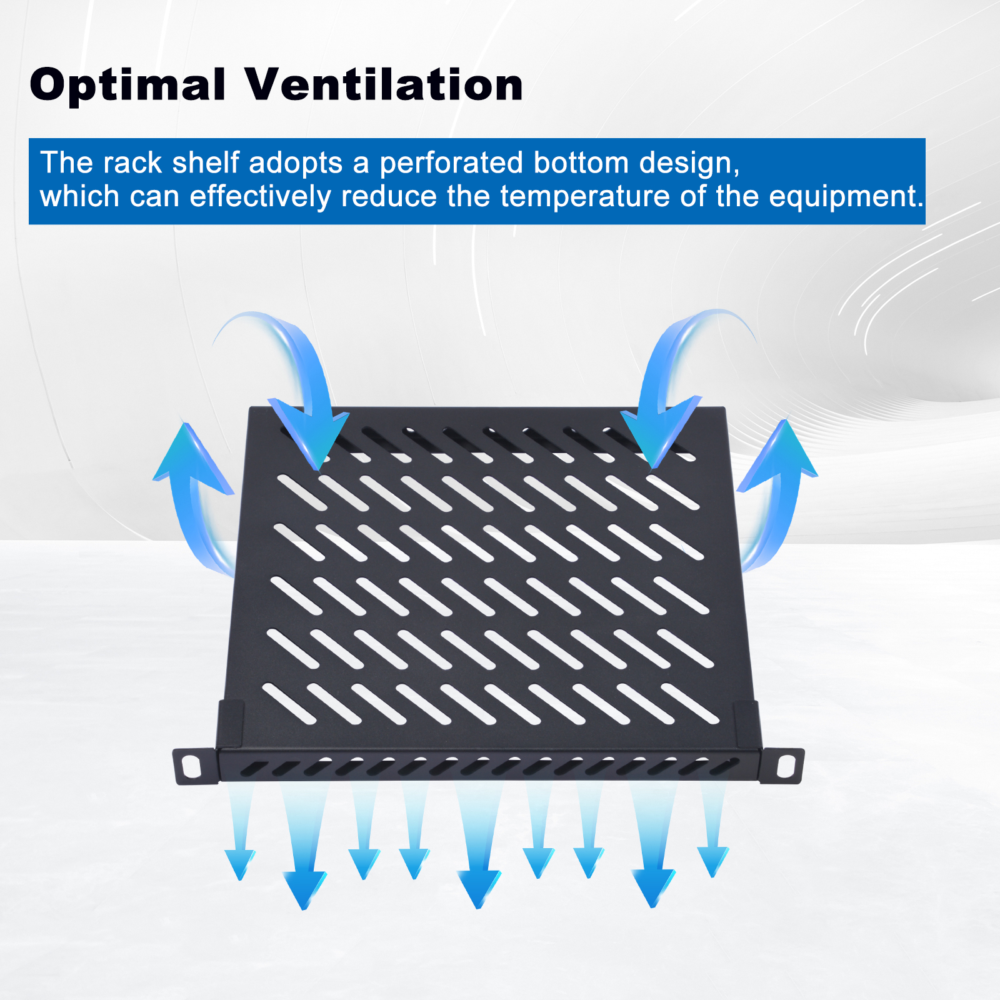
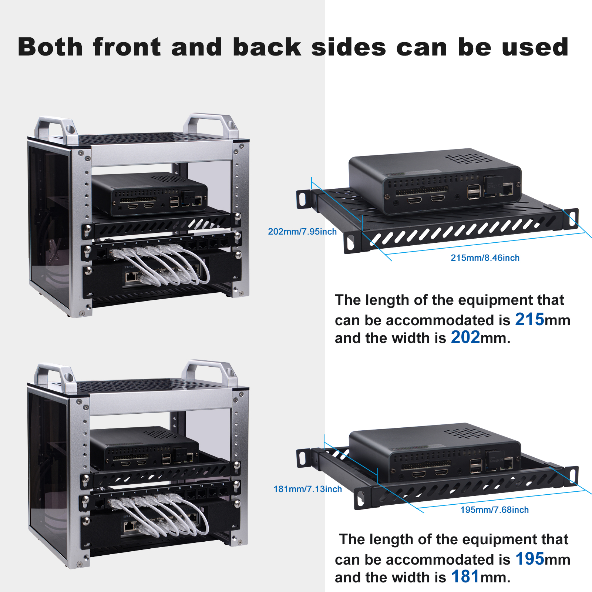
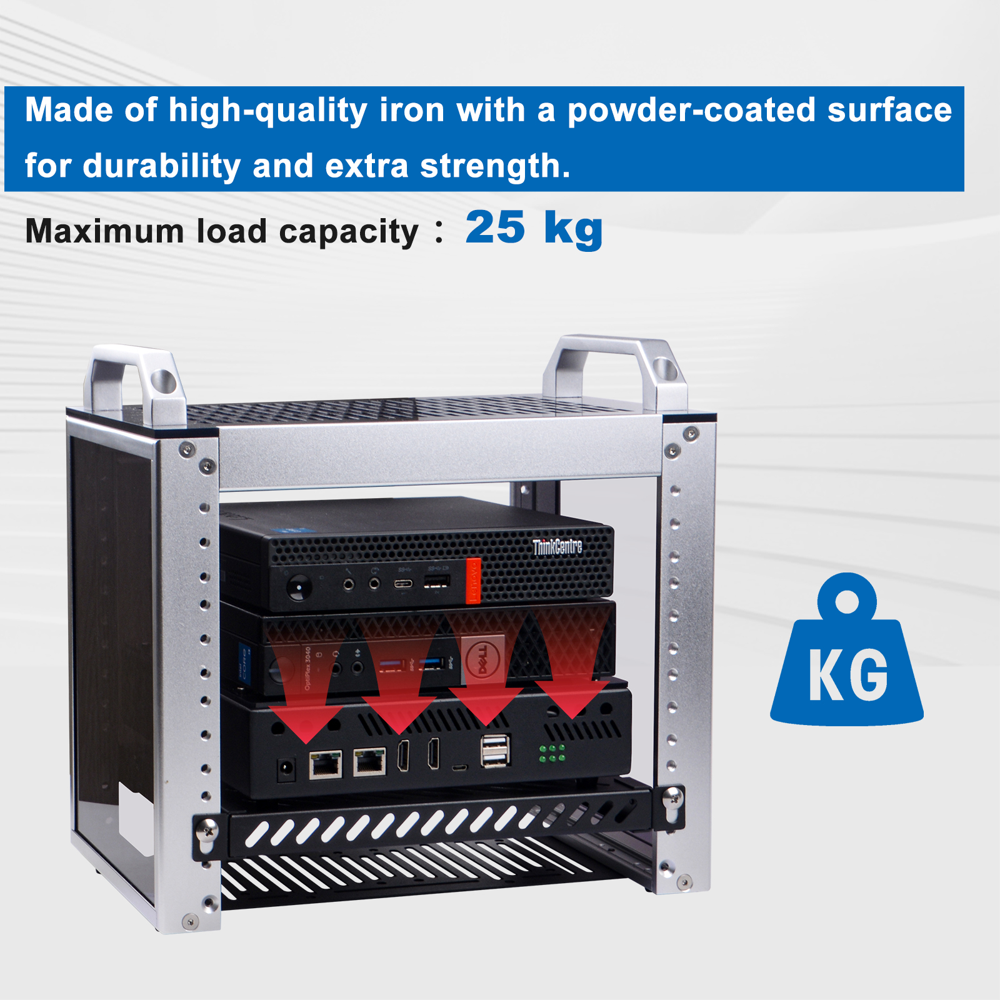
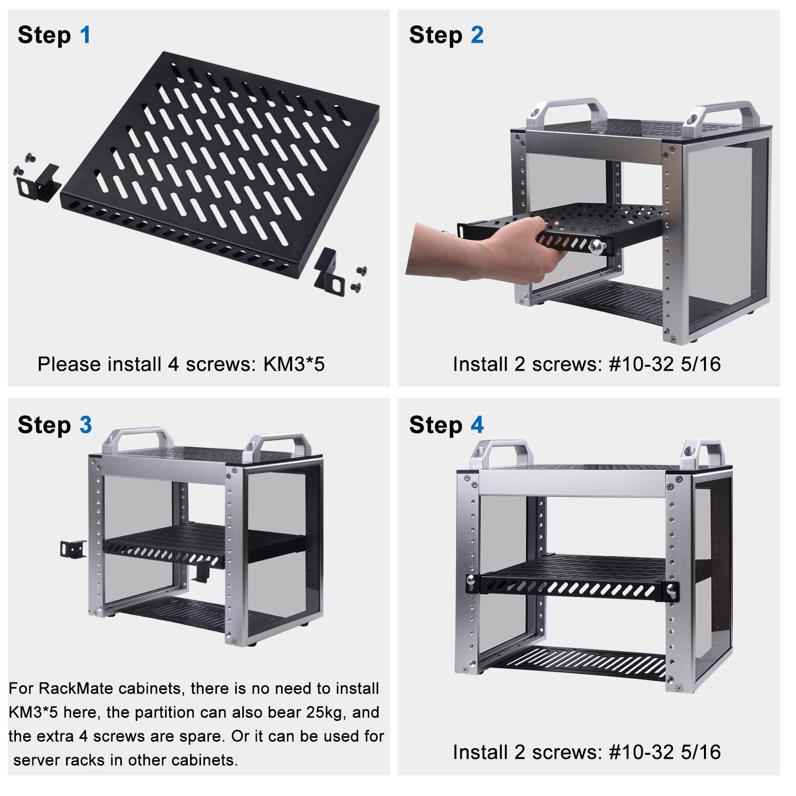

DeskPi Rackmate 10-inch 0.5U Heavy Duty Rack Shelf for 10 inch server
-
SKU: DP-0056
-
Name: DeskPi Rackmate 10-inch 0.5U Heavy Duty Rack Shelf for 10 inch server

Description
The DeskPi Rackmate 10-inch 0.5U Heavy Duty Rack Shelf is designed specifically for 10-inch servers. It features an enhanced design tailored for heavy-duty use scenarios.
Product Size

Package List

Features
- Optimal Ventilation

- Both front and back sied can be used

- Heavy Duty scenario

How to assemble it

Documentations
- Datasheet: DP-0056-datasheet
- Mechanical Drawing: DP-0056-Mechanical-Drawing
Accessories Purchase URL


-
Rackmate 10-inch 2U Rack Mount with PCIE NVME Board for Raspberry Pi 5/4B: DP-0046
-
Rackmate 10-inch 1U Rack Mount with PCIE NVME Board for Raspberry Pi 5/4B: DP-0039
-
Rack shelf DP-0031
-
Blank Pannel DP-0032
-
SBC shelf DP-0033
-
10-Inch Network Switch DP-0034
-
Mini ITX shelf DP-0035
-
CAT6A Ethernet Cable(0.2M) L-0094
-
CAT6A Ethernet Cable(0.5M) L-0095
-
DC PDU Lite 7-CH 0.5U for DeskPi Rackmate T1:DP-0042
-
10-inch Server Rack 0.5U Rack Cable Management Panel-with 3 D-Rings: DP-0039
Amazon Links:
- DeskPi RackMate T1:
- Network Patch Panel 12 Port CAT6 10inch 0.5U
- SBC shelf 10 inch 1U Rack
- Mini ITX shelf 10 inch 1U Rack
- Blank Pannel 10 inch 1U Rack
- SBC shelf 10 inch 1U Rack, with 2PCS Micro HDMI to HDMI Adapter Board for Raspberry Pi 5 / Pi 4B
- Micro HDMI to HDMI Adapter Board for Raspberry Pi 5 / Pi 4B
- GeeekPi 4PCS Cat6A Ethernet Cable, Snagless Short Shielded Network Cable, White (20 cm/0.65 ft)
US Store (0.2m)
UK Store (0.2m)
UK Store (0.5m)
- Rack shelf 10 Inch 0.5U Rack Shelf
- DeskPi 10inch Server Rack 0.5U Rack Cable Management Panel-with 3 D-Rings
- DeskPi DC PDU Lite 7-CH 0.5U for DeskPi Rackmate T1